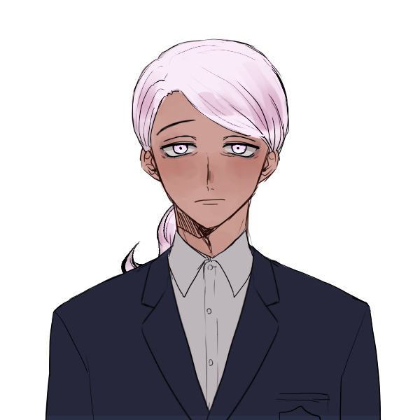

캐치 프레이즈
아~ 시민을 위해 일하고 있었는데 미치겠다!
한마디
“ 당황하지 말고 지시에…말 좀 들어! ”
외관
연보라색 머리카락, 연보라색 홍채. 색이 밝은 탓에 얼핏 백발과도 유사하다. (그렇다고 정말 백발 백안이라는 뜻은 아니다.) 어깨선까지 내려온 머리카락을 2:8로 깔끔하게 정리해 아래로 짧게 묶었다. 모범적인 머리 정리의 표본과도 같다.
이외에는 특별히 눈에 띄는 점이 없다. 흰 장갑, 각 잡힌 코트, 조끼까지 착실하게 챙겨입은 단정한 회색빛 근무복, 녹색 셔츠에 흰 넥타이, 웃음기 하나 없이 군기 잡힌 무표정까지. 끝.
출처 :https://picrew.me/ja/image_maker/11534
이름
한 길
나이
43세
키/체중
190/90
성격
Keyword: 책임감 있는, 리더십, 진지한
농담을 모른다. 기본적으로 예의바른 데다 맡은 바를 성실히 이행하려고는 하지만, 간혹 욱하는 성질은 어쩔 도리가 없나 보다. 꼬인 상황에 도움이 되는 기강 잡힌 호통도 아니고, 그냥 제 분을 이기지 못하고 어린아이 떼 쓰듯 울부짖어버린다. 그나마 다행인 것은 진정이 빠르다는 점. (우아앙~! 나도 집에 가고싶어~! …그거 안타깝습니다.)
군중을 지휘하는 재능을 타고났다. 이를 간략히 표현하면 리더십이 된다. ‘승객 여러분께서는 당황하지 마시고 순서를 지켜 천천히 이동해주시기 바랍니다.’ -와 같은 딱딱한 안내 멘트도 누르면 자동으로 척척 튀어나올 지경.
기타
지하철 차장. 기관사는 아니지만 대강 운전할 줄은 안다.
평소 근무 일지를 성실하게 쓰는 편.
평소와 같이 근무 중이었다. 정확히는 갑작스럽게 열차가 정지하기 전까지만 해도 그랬다. 그러다 그만 열차가 멈추고, 상황을 살핀 후 침착하게 외부와의 전화 연결을 시도했으나…돌아온 것은 전화를 연결할 수 없다는 기계음 뿐.
보다시피 특별한 소득은 없었다.
소지품
근무 일지, 만년필
관계
-